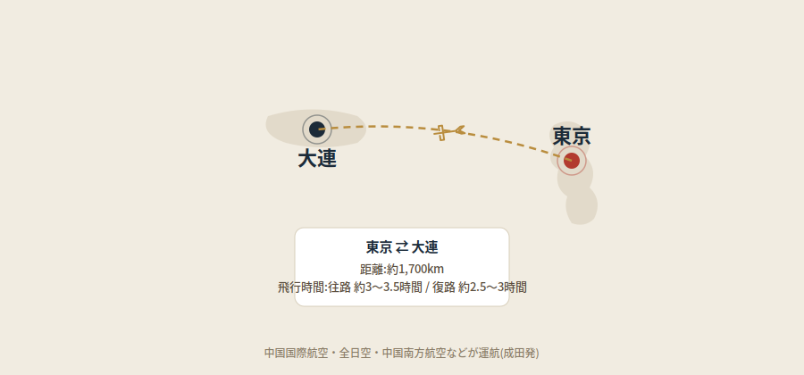

大連の街を歩くと、中国の他都市とはどこか違う、ヨーロッパ風の街並みに気づく方が多いはずです。円形の広場を中心に道路が放射状に伸びる独特の都市構造には、実はこの街がたどってきた特殊な歴史が関係しています。この記事では、大連がどんな成り立ちを持つ街なのか、そして東京からの行き方までまとめて解説します。
「青泥窪」という小さな漁村から始まった街
今の大連がある場所は、もともと「青泥窪(チンニーワー)」と呼ばれる小さな漁村でした。1898年、帝政ロシアが清朝から遼東半島南部の租借権を獲得すると、この地が水深が深く大型船の接岸に適し、しかも冬でも凍結しないことに着目し、本格的な港湾都市の建設を計画します。ロシア語で「遠方」を意味する「ダルニー」と名付けられ、都市建設が始まりました。
都市計画を手がけたのは、東清鉄道の技師長ウラジミル・サハロフと、2人のドイツ人建築家でした。中心に据えられたのは、パリの凱旋門の周辺を模したという直径213メートルの円形広場(当時のニコラエフスカヤ広場、現在の中山広場)で、そこから10本の道路が放射状に伸びる設計です。日露戦争(1904〜1905年)の結果、租借権はロシアから日本に引き継がれ、都市名も「大連」と改められました。日本は南満州鉄道株式会社を中心に、ロシアの都市計画を踏襲しながら西洋風の街並みをさらに発展させ、1920年代には現在の街の骨格がほぼ完成しました。
1904年から1945年までの約40年間、大連はロシア、そして日本の統治を受け続けた街でした。この歴史的な経緯こそが、今も中山広場周辺に残るヨーロッパ風建築の理由なのです。
アカシアの街
大連は「アカシアの街」という愛称でも知られています。市の花に指定されているアカシアは5月ごろに満開を迎え、「大連国際槐花節(アカシア祭り)」という祭りも開催されます。港湾都市らしい潮風と、初夏に咲き誇るアカシアの香りが、大連という街の季節感を印象づけています。
今も続く、中国屈指の日本とのつながり
統治の歴史だけでなく、現在の大連は中国の都市の中でも際立って日系企業の存在感が大きいことで知られています。約1,500社の日系企業が進出しており、日本語人材が豊富なことから、製造業だけでなくコールセンターやITアウトソーシングの拠点としても発展してきました。福岡県北九州市、京都府舞鶴市との姉妹都市提携をはじめ、日本の複数の地方自治体が大連に事務所を構えるなど、地方交流の歴史も深いのが特徴です。
食の面でも大連は日本人にとって親しみやすい街です。港町らしくあっさりとした塩・醤油ベースの海鮮料理が中心で、中でも「海腸餃子」というユムシを使ったご当地餃子は、大連以外ではなかなか出会えない一品です。グルメ事情については大連グルメガイドで詳しく紹介しています。
東京からの行き方:距離と所要時間

東京(成田)と大連(大連周水子国際空港)の間には、中国国際航空・全日空・中国南方航空などが直行便を運航しています。距離は約1,700kmと、上海や北京などと比べても近く、飛行時間は東京発が約3〜3.5時間、大連発が約2.5〜3時間程度です。地理的な近さも、大連が日本のビジネス拠点として選ばれてきた理由の一つといえるでしょう。
まとめ
大連は、ロシアが設計し日本が引き継いだ都市計画の名残が今も色濃く残る、中国では珍しい成り立ちを持つ街です。中山広場周辺を歩けば、その歴史を肌で感じることができるはずです。アカシアの香る港町の雰囲気とあわせて、街そのものの物語を味わってみてください。
この記事の内容に古い情報や誤りを見つけた場合、あるいはご感想・ご質問がありましたら、お問い合わせまでお気軽にご連絡ください。